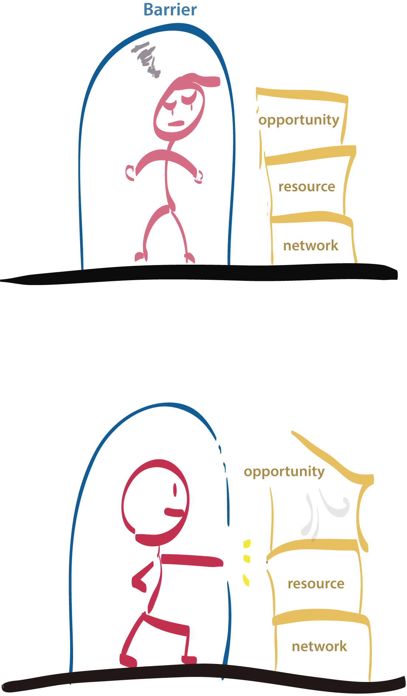

We all know and learned about stereotype as we grow up. I’m sure you don’t need further explanation for it. Today, I’d like to introduce a new term I learned, stereotype threat.Stereotype threat is a situation where people are or feel about stereotype because of their social identity. When confronting other groups of people, stereotype threat is possible to happen.
Why is Stereotype Threat Important?
There are social experiments showing stereotype threat negatively affect on performance when people facing or believe they are in a stereotype threat. Without able to perform normally would make them feel bad. It’s possible the symptom to develop further, get worse on the next performance, or even create a barrier isolating one from outside.
Personal Experience
There were situations when I felt stereotype threat. Being an immigrant, my English skills is not as good as others. When I was at an important moment like final presentation, interview, or oral test, I worried a lot. There is a dangerous zone where the feeling of incompetent comes to me and my brain doesn’t function as normal. The feeling of inferior because of my identity gets deeper and deeper. It’s important to get out of the rabbit hole as soon as possible.
Possible Strategies
If we are already under a stereotype threat situation, the first thing we need to do is getting out of it quickly. Trying to think something unrelated would be helpful. Also, we need to think positively and asking ourselves it’s 21st century, why make a big deal of it. We are all made differently and nowadays nobody judges people by one aspect or. There must be other aspects that make us better than others. For example, an immigrant may not speak native English but they must know an extra language and their cultural difference would create more opportunities. How we look at a problem can affect our lives a lot.
